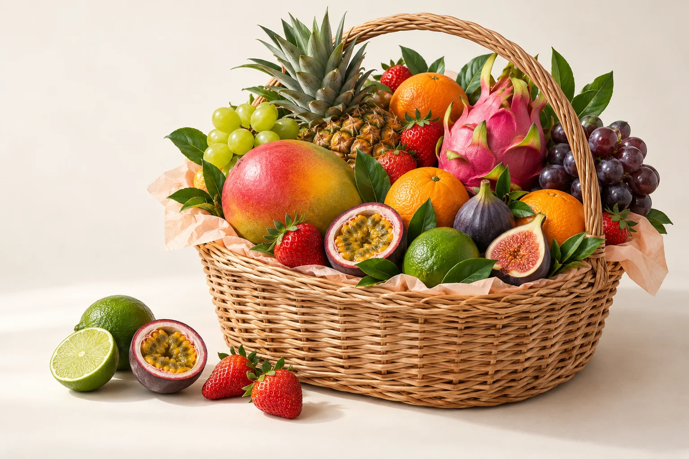

Выберите своё
Добавьте в корзину фрукты, набор или подарок.
Сочные фрукты на каждый день
и красивые корзины для особенных людей.

Мы в Краснодаре. Поможем подобрать состав, уточним наличие и согласуем получение заказа.
+7 918 390-13-13Добавьте в корзину фрукты, набор или подарок.
Скопируйте список и позвоните нам для оформления.
Подтвердим наличие, итоговую цену и условия доставки или самовывоза.
Да, пожелания можно указать в комментарии к заказу и обсудить по телефону. Возможность замены и стоимость согласуем при оформлении.
Позвоните по номеру +7 918 390-13-13. Стоимость, адрес и удобное время получения согласуются до подтверждения заказа.
Способ оплаты уточняется при оформлении по телефону. Онлайн-оплата на этой версии сайта не подключена.
Фотографии иллюстрируют варианты наполнения. Фактический состав, вес, внешний вид и наличие сезонных фруктов нужно подтвердить перед заказом.